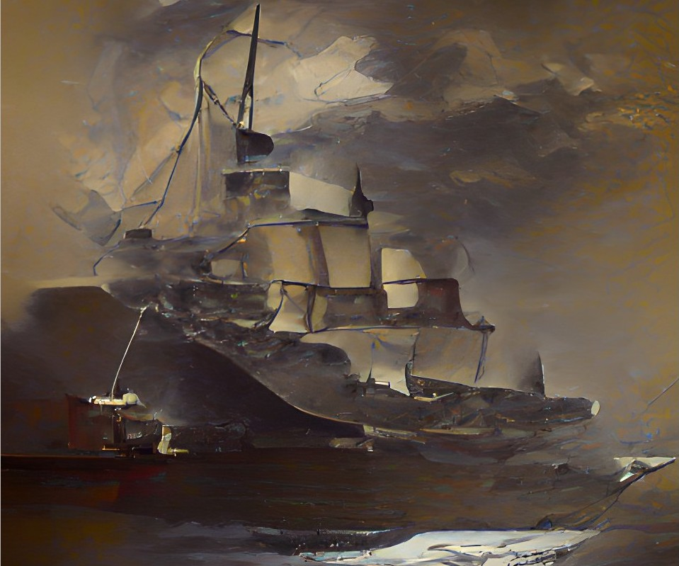
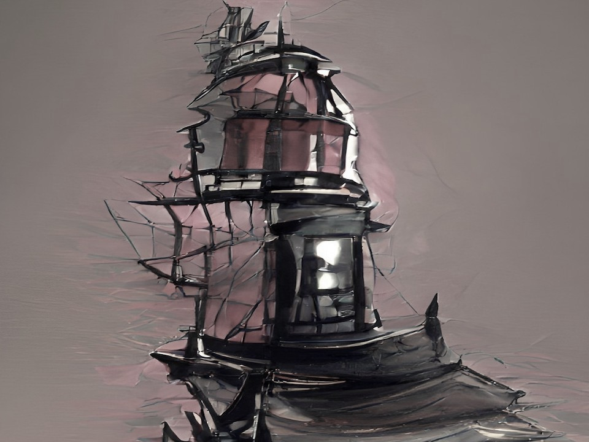
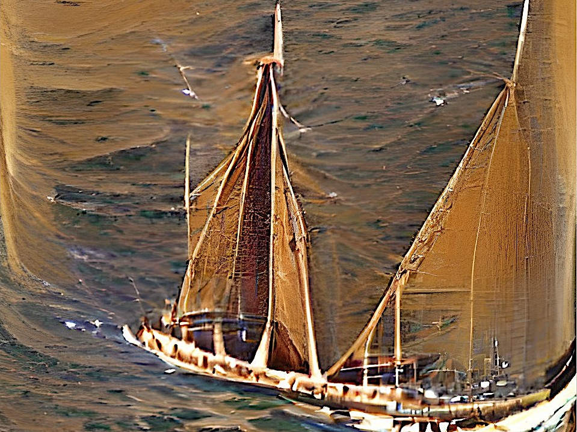
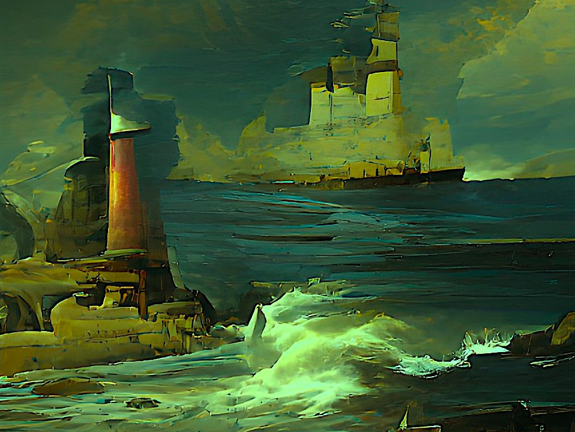
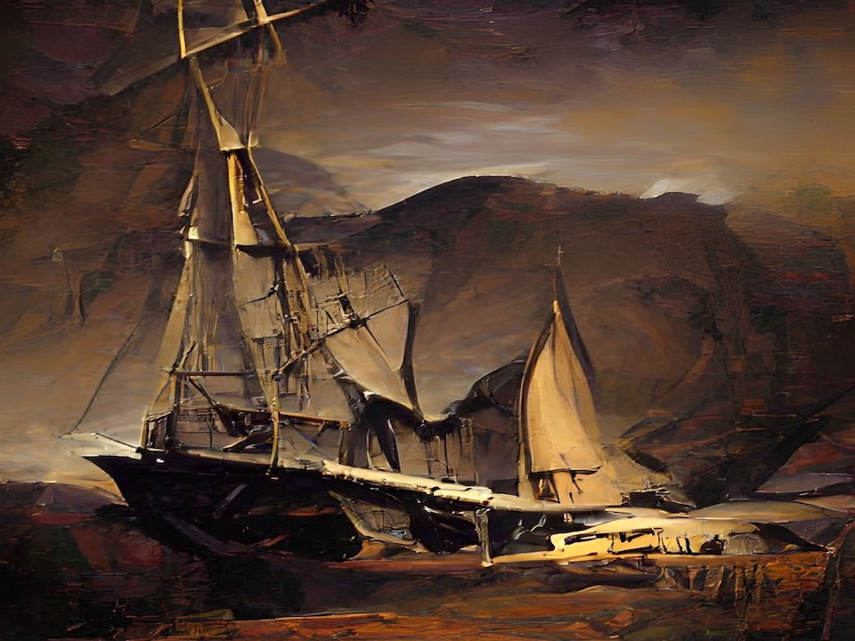
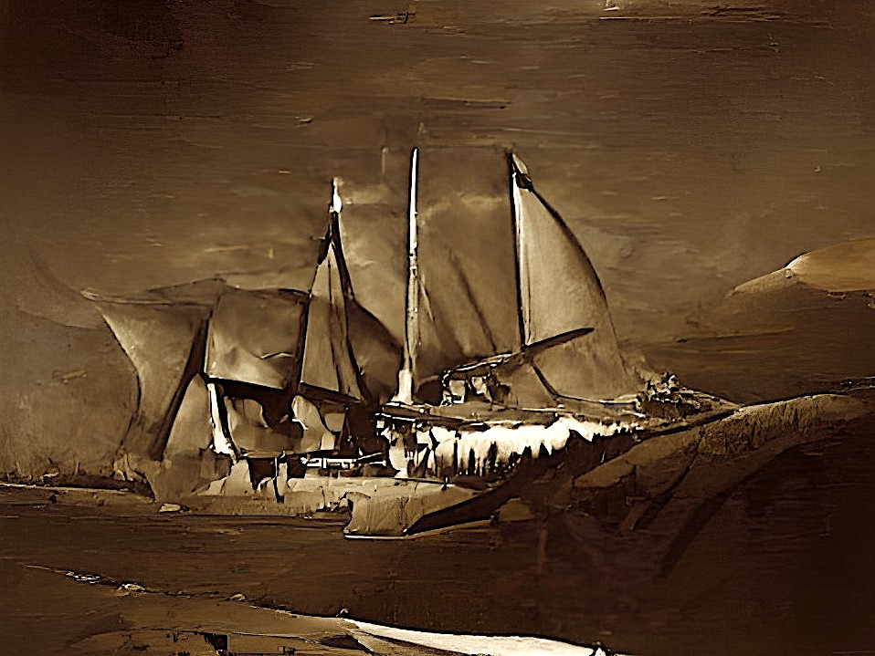
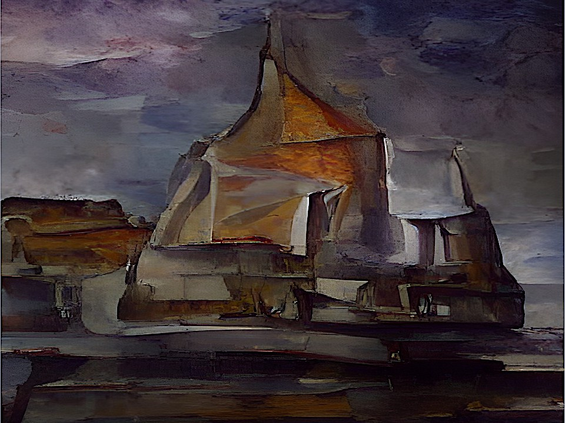
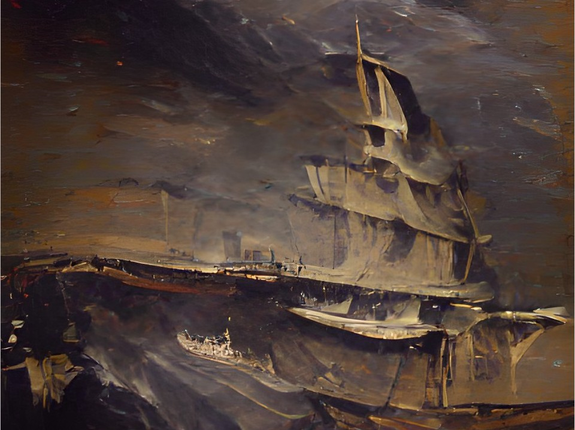

IMAGES OF THE DAY 47
10/01/2022 - 10/10/2022

HMS Queen Mary
via (AI) Artificial Intelligence
10/01/2022
Click image to access All the Ships at Sea gallery
Lighthouse on the Move 
via (AI) Artificial Intelligence
10/02/2022
Click image to access All the Ships at Sea gallery
Schooner at Sea 
via (AI) Artificial Intelligence
10/03/2022
Click image to access All the Ships at Sea gallery
Ship Ahoy! 
via (AI) Artificial Intelligence
10/04/2022
Click image to access All the Ships at Sea gallery
Sailboat
via (AI) Artificial Intelligence
10/05/2022
Click image to access All the Ships at Sea gallery
Whaling Ship 01 
via (AI) Artificial Intelligence
10/06/2022
Click image to access All the Ships at Sea gallery
Whaling Ship 02 
via (AI) Artificial Intelligence
10/07/2022
Click image to access All the Ships at Sea gallery
Cargo Ship 
via (AI) Artificial Intelligence
10/08/2022
Click image to access All the Ships at Sea gallery
SS Normandie 
via (AI) Artificial Intelligence
10/09/2022
Click image to access All the Ships at Sea gallery
Sailing Ship (abstract)
via (AI) Artificial Intelligence
10/10/2022
Click image to access All the Ships at Sea gallery